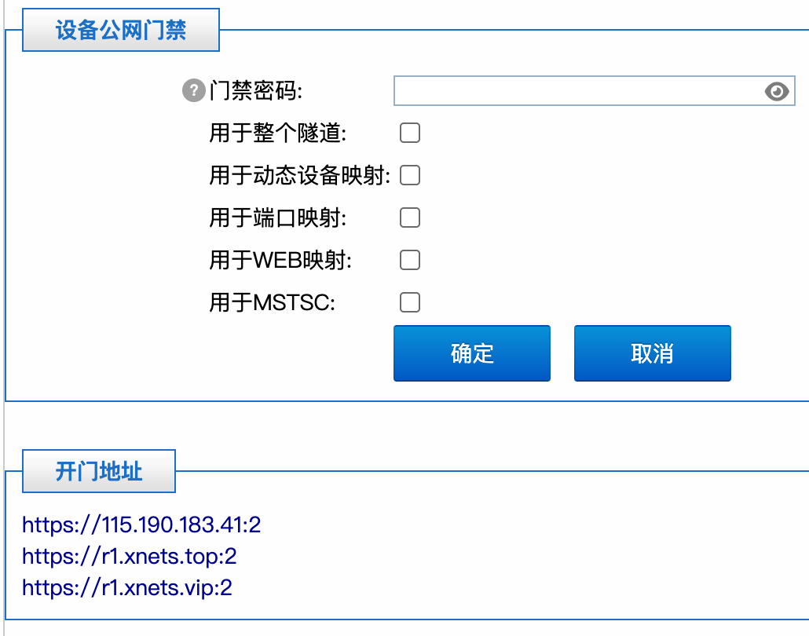
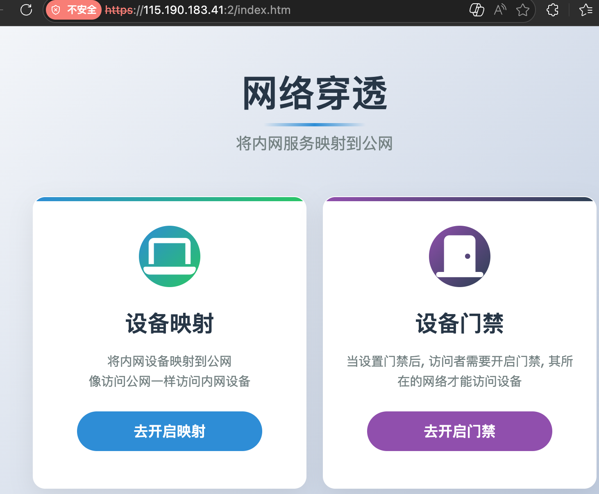
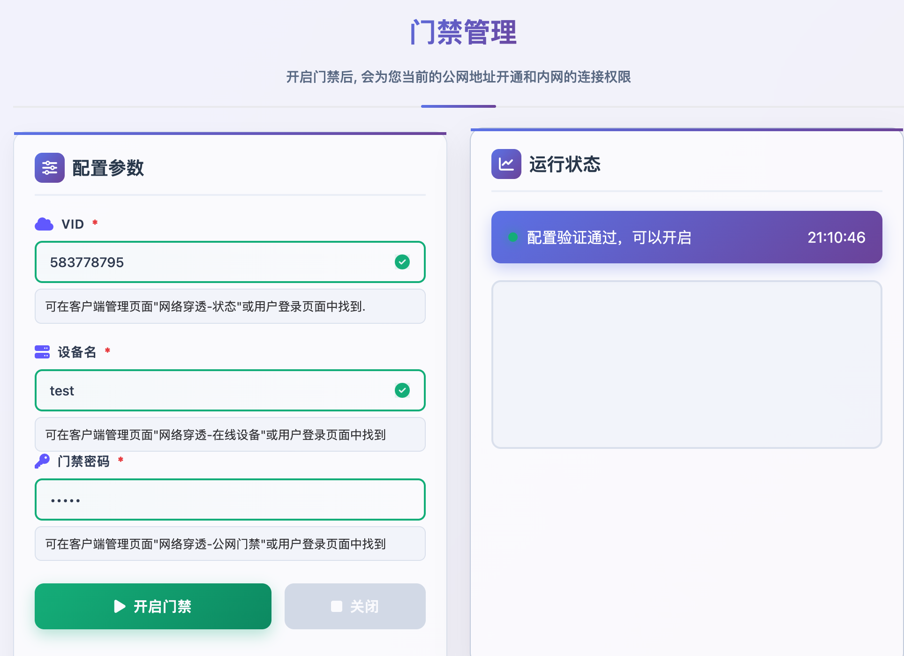

设备门禁是一种强力的安全访问措施。传统的黑白名单方式不能应对访问者是动态IP的情况, 这种情况下, 设备门禁和敲门协议可以满足用户的安全需求。
配置路径: "公网服务-设备门禁"。

配置视图： config-view -> xnetc-view
使用示例:
xnetc-view>public-service door 123456 xnetc-view>public-service door-on WIP xnetc-view>no public-service door xnetc-view>no public-service door-on
命令说明:
| public-service door %PASSWORD | 配置门禁密码为%PASSWORD, 例如: 123456 |
| public-service door-on %SELECT | 门禁作用在什么功能上
T: 用于整个隧道 I: 用于动态设备映射 P: 用于端口映射 W: 用于WEB域名映射 M: 用于Windows远程桌面 |
| no public-service door | 取消门禁密码 |
| no public-service door-on | 取消门禁的所有功能 |
输入门禁密码后, 选择门禁作用于哪些功能, 点击确定后开启门禁功能
访问者使用浏览器访问: https://公网节点IP或者域名:2, 点击"去开启门禁"


输入您的 "用户ID" (注册用户可以输入用户名) 和 "设备名" 以及 "门禁密码" 后点击 "开启门禁" 按钮